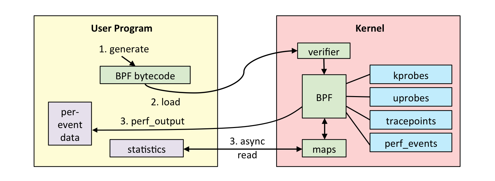

备注
AI Translation Notice
This document was automatically translated by Qwen/Qwen3-8B model, for reference only.
Source document: kernel/trace/eBPF.md
Translation time: 2025-05-19 01:41:41
Translation model:
Qwen/Qwen3-8B
Please report issues via Community Channel
eBPF
Author: Chen Linfeng
Email: chenlinfeng25@outlook.com
Overview
eBPF is a revolutionary technology that originated from the Linux kernel. It allows sandboxed programs to run in privileged contexts (such as the operating system kernel). It is used to extend the kernel’s functionality in a secure and efficient manner without modifying the kernel source code or loading kernel modules.
Historically, due to the kernel’s privileged position in supervising and controlling the entire system, the operating system has been an ideal place for implementing observability, security, and networking features. At the same time, due to the kernel’s core position and high requirements for stability and security, the kernel has been difficult to iterate quickly. Therefore, traditionally, the innovation speed at the operating system level has been slower compared to features implemented outside the operating system itself.
eBPF fundamentally changes this approach. By allowing sandboxed programs to run within the operating system, application developers can run eBPF programs to add additional functionality to the operating system at runtime. Then, with the help of JIT compilers and verification engines, the operating system ensures that these programs are as secure and efficient as natively compiled programs. This has sparked a wave of eBPF-based projects covering a wide range of use cases, including next-generation network implementations, observability, and security features.
eBPF in DragonOS
Adding eBPF support to a new OS requires understanding the eBPF runtime process. Typically, eBPF needs user-space tools and kernel-related infrastructure to function properly. Since a new OS usually is compatible with Linux applications, this can further simplify the porting work of user-space tools. As long as the kernel implements the relevant system calls and features, it can work with existing tools to support eBPF.
eBPF Execution Process

As shown in the figure, the execution process of an eBPF program is divided into three main steps:
Source code -> Binary
Users can write eBPF programs in Python/C/Rust and compile the source code into a binary program using the relevant toolchain.
In this step, users need to reasonably use helper functions to enrich the functionality of the eBPF program.
Loading eBPF program
User-space tool libraries encapsulate the system call interfaces provided by the kernel to simplify the user’s work. After preprocessing, user-space tools make system calls to request the kernel to load the eBPF program.
The kernel first verifies the eBPF program to check its correctness and legality, and also performs further processing on the program.
The kernel attaches the eBPF program to the kernel’s mount points (kprobe/uprobe/trace_point) based on the user’s request.
During kernel operation, when these mount points are triggered by specific events, the eBPF program is executed.
Data Interaction
eBPF programs can collect information from the kernel, and user tools can selectively retrieve this information.
eBPF programs can directly output information to a file, and user tools can read and parse the content of the file to obtain the information.
eBPF programs share and exchange data between the kernel and user space through Maps.
User-space Support
There are many user-space eBPF tool libraries, such as C’s libbpf, Python’s bcc, and Rust’s Aya. Overall, the processing flow of these tools is similar. DragonOS currently supports eBPF programs written with the Aya framework. As an example, the user-space tool processing flow for Aya is as follows:
Provide helper functions and Map abstractions for eBPF usage, making it easier to implement eBPF programs.
Process the compiled eBPF program, call system calls to create Maps, and obtain corresponding file descriptors.
Update the values of Maps (.data) as needed.
Modify the relevant instructions of the eBPF program based on relocation information.
Handle bpf to bpf calls in the eBPF program according to the kernel version.
Load the eBPF program into the kernel.
Package system calls and provide a large number of functions to help access eBPF information and interact with the kernel.
DragonOS’s support for the Aya library is not complete. By trimming the Aya library, we have implemented a smaller tiny-aya. To ensure future compatibility with Aya, tiny-aya only modifies the core tool aya in Aya. Some functions have been disabled because the system calls or files they require are not yet implemented in DragonOS.
Tokio
Aya requires an asynchronous runtime. With the addition of some system calls and fixes for some errors, DragonOS now supports a basic Tokio runtime.
Using Aya to Create an eBPF Program
As described in the official documentation provided by Aya, users only need to install the corresponding Rust toolchain according to its process to create an eBPF project based on a template. Taking the current implementation of syscall_ebf as an example, this program counts the number of system calls and stores them in a HashMap.
├── Cargo.toml
├── README.md
├── syscall_ebpf
├── syscall_ebpf-common
├── syscall_ebpf-ebpf
└── xtask
The project structure in the user/app directory is as follows:
syscall_ebpf-ebpfis the directory for implementing eBPF code, which will be compiled into bytecode.syscall_ebpf-commonis a common library, convenient for information exchange between the kernel and user space.syscall_ebpfis the user-space program, responsible for loading the eBPF program and retrieving data generated by the eBPF program.xtaskis a command-line tool, convenient for users to compile and run user-space programs.
To run user-space programs in DragonOS, the project created using the template cannot be used directly:
This project does not meet DragonOS’s requirements for the structure of user programs, but this can be easily modified.
Because DragonOS’s support for the Tokio runtime is not yet complete, the usage method needs to be slightly modified.
#[tokio::main(flavor = "current_thread")]
async fn main() -> Result<(), Box<dyn Error>> {
Because the support for Aya is not complete, the project’s dependencies on aya and aya-log need to be replaced with the implementations in tiny-aya.
[dependencies]
aya = { git = "https://github.com/DragonOS-Community/tiny-aya.git" }
aya-log = { git = "https://github.com/DragonOS-Community/tiny-aya.git" }
With slight modifications, eBPF programs can be implemented using the existing tools of Aya.
Kernel-space Support
Kernel-space support mainly consists of three parts:
kprobe implementation: located in directory
kernel/crates/kproberbpf runtime: located in directory
kernel/crates/rbpfSystem call support
Helper function support
rbpf
Previously, rbpf was used to run some simple eBPF programs. To run more complex programs, it needs to be modified.
Add support for bpf to bpf calls: by adding new stack abstractions and saving and restoring necessary register data.
Disable unnecessary internal memory checks, which are usually handled by the kernel’s verifier.
Add data structures with ownership to avoid limitations on lifetimes.
System Calls
All eBPF-related system calls are concentrated in bpf(), and they are further distinguished by the parameter cmd. The current support is as follows:
pub fn bpf(cmd: bpf_cmd, attr: &bpf_attr) -> Result<usize> {
let res = match cmd {
// Map related commands
bpf_cmd::BPF_MAP_CREATE => map::bpf_map_create(attr),
bpf_cmd::BPF_MAP_UPDATE_ELEM => map::bpf_map_update_elem(attr),
bpf_cmd::BPF_MAP_LOOKUP_ELEM => map::bpf_lookup_elem(attr),
bpf_cmd::BPF_MAP_GET_NEXT_KEY => map::bpf_map_get_next_key(attr),
bpf_cmd::BPF_MAP_DELETE_ELEM => map::bpf_map_delete_elem(attr),
bpf_cmd::BPF_MAP_LOOKUP_AND_DELETE_ELEM => map::bpf_map_lookup_and_delete_elem(attr),
bpf_cmd::BPF_MAP_LOOKUP_BATCH => map::bpf_map_lookup_batch(attr),
bpf_cmd::BPF_MAP_FREEZE => map::bpf_map_freeze(attr),
// Program related commands
bpf_cmd::BPF_PROG_LOAD => prog::bpf_prog_load(attr),
// Object creation commands
bpf_cmd::BPF_BTF_LOAD => {
error!("bpf cmd {:?} not implemented", cmd);
return Err(SystemError::ENOSYS);
}
ty => {
unimplemented!("bpf cmd {:?} not implemented", ty)
}
};
res
}
Among these, the command for creating a Map is further细分 to determine the specific Map type. Currently, we have added support for general Maps:
bpf_map_type::BPF_MAP_TYPE_ARRAY
bpf_map_type::BPF_MAP_TYPE_PERCPU_ARRAY
bpf_map_type::BPF_MAP_TYPE_PERF_EVENT_ARRAY
bpf_map_type::BPF_MAP_TYPE_HASH
bpf_map_type::BPF_MAP_TYPE_PERCPU_HASH
bpf_map_type::BPF_MAP_TYPE_QUEUE
bpf_map_type::BPF_MAP_TYPE_STACK
bpf_map_type::BPF_MAP_TYPE_LRU_HASH
bpf_map_type::BPF_MAP_TYPE_LRU_PERCPU_HASH
bpf_map_type::BPF_MAP_TYPE_CPUMAP
| bpf_map_type::BPF_MAP_TYPE_DEVMAP
| bpf_map_type::BPF_MAP_TYPE_DEVMAP_HASH => {
error!("bpf map type {:?} not implemented", map_meta.map_type);
Err(SystemError::EINVAL)?
}
All Maps implement the defined interface, which is referenced from the Linux implementation:
pub trait BpfMapCommonOps: Send + Sync + Debug + CastFromSync {
/// Lookup an element in the map.
///
/// See https://ebpf-docs.dylanreimerink.nl/linux/helper-function/bpf_map_lookup_elem/
fn lookup_elem(&mut self, _key: &[u8]) -> Result<Option<&[u8]>> {
Err(SystemError::ENOSYS)
}
/// Update an element in the map.
///
/// See https://ebpf-docs.dylanreimerink.nl/linux/helper-function/bpf_map_update_elem/
fn update_elem(&mut self, _key: &[u8], _value: &[u8], _flags: u64) -> Result<()> {
Err(SystemError::ENOSYS)
}
/// Delete an element from the map.
///
/// See https://ebpf-docs.dylanreimerink.nl/linux/helper-function/bpf_map_delete_elem/
fn delete_elem(&mut self, _key: &[u8]) -> Result<()> {
Err(SystemError::ENOSYS)
}
/// For each element in map, call callback_fn function with map,
/// callback_ctx and other map-specific parameters.
///
/// See https://ebpf-docs.dylanreimerink.nl/linux/helper-function/bpf_for_each_map_elem/
fn for_each_elem(&mut self, _cb: BpfCallBackFn, _ctx: *const u8, _flags: u64) -> Result<u32> {
Err(SystemError::ENOSYS)
}
/// Look up an element with the given key in the map referred to by the file descriptor fd,
/// and if found, delete the element.
fn lookup_and_delete_elem(&mut self, _key: &[u8], _value: &mut [u8]) -> Result<()> {
Err(SystemError::ENOSYS)
}
/// perform a lookup in percpu map for an entry associated to key on cpu.
fn lookup_percpu_elem(&mut self, _key: &[u8], cpu: u32) -> Result<Option<&[u8]>> {
Err(SystemError::ENOSYS)
}
/// Get the next key in the map. If key is None, get the first key.
///
/// Called from syscall
fn get_next_key(&self, _key: Option<&[u8]>, _next_key: &mut [u8]) -> Result<()> {
Err(SystemError::ENOSYS)
}
/// Push an element value in map.
fn push_elem(&mut self, _value: &[u8], _flags: u64) -> Result<()> {
Err(SystemError::ENOSYS)
}
/// Pop an element value from map.
fn pop_elem(&mut self, _value: &mut [u8]) -> Result<()> {
Err(SystemError::ENOSYS)
}
/// Peek an element value from map.
fn peek_elem(&self, _value: &mut [u8]) -> Result<()> {
Err(SystemError::ENOSYS)
}
/// Freeze the map.
///
/// It's useful for .rodata maps.
fn freeze(&self) -> Result<()> {
Err(SystemError::ENOSYS)
}
/// Get the first value pointer.
fn first_value_ptr(&self) -> *const u8 {
panic!("value_ptr not implemented")
}
}
The system call that connects eBPF and kprobe is perf_event_open. This system call is very complex in Linux, so DragonOS does not implement it according to Linux. Currently, only two functions are supported:
match args.type_ {
// Kprobe
// See /sys/bus/event_source/devices/kprobe/type
perf_type_id::PERF_TYPE_MAX => {
let kprobe_event = kprobe::perf_event_open_kprobe(args);
Box::new(kprobe_event)
}
perf_type_id::PERF_TYPE_SOFTWARE => {
// For bpf prog output
assert_eq!(args.config, perf_sw_ids::PERF_COUNT_SW_BPF_OUTPUT);
assert_eq!(
args.sample_type,
Some(perf_event_sample_format::PERF_SAMPLE_RAW)
);
let bpf_event = bpf::perf_event_open_bpf(args);
Box::new(bpf_event)
}
}
One of them,
PERF_TYPE_SOFTWARE, is used to create software-defined events, andPERF_COUNT_SW_BPF_OUTPUTensures that this event is used to collect the output of bpf.PERF_TYPE_MAXusually indicates the creation of kprobe/uprobe events, which is one of the ways users can use kprobe. Users can bind an eBPF program to this event.
Similarly, different events of perf also implement the defined interface:
pub trait PerfEventOps: Send + Sync + Debug + CastFromSync + CastFrom {
fn mmap(&self, _start: usize, _len: usize, _offset: usize) -> Result<()> {
panic!("mmap not implemented for PerfEvent");
}
fn set_bpf_prog(&self, _bpf_prog: Arc<File>) -> Result<()> {
panic!("set_bpf_prog not implemented for PerfEvent");
}
fn enable(&self) -> Result<()> {
panic!("enable not implemented");
}
fn disable(&self) -> Result<()> {
panic!("disable not implemented");
}
fn readable(&self) -> bool {
panic!("readable not implemented");
}
}
This interface is currently not stable.
Helper Function Support
User-space tools communicate with the kernel through system calls to set up and exchange eBPF data. In the kernel, the execution of eBPF programs also requires the help of the kernel. A standalone eBPF program is not very useful, so it calls the kernel-provided helper functions to access kernel resources.
Most of the currently supported helper functions are related to Map operations:
/// Initialize the helper functions.
pub fn init_helper_functions() {
let mut map = BTreeMap::new();
unsafe {
// Map helpers::Generic map helpers
map.insert(1, define_func!(raw_map_lookup_elem));
map.insert(2, define_func!(raw_map_update_elem));
map.insert(3, define_func!(raw_map_delete_elem));
map.insert(164, define_func!(raw_map_for_each_elem));
map.insert(195, define_func!(raw_map_lookup_percpu_elem));
// map.insert(93,define_func!(raw_bpf_spin_lock);
// map.insert(94,define_func!(raw_bpf_spin_unlock);
// Map helpers::Perf event array helpers
map.insert(25, define_func!(raw_perf_event_output));
// Probe and trace helpers::Memory helpers
map.insert(4, define_func!(raw_bpf_probe_read));
// Print helpers
map.insert(6, define_func!(trace_printf));
// Map helpers::Queue and stack helpers
map.insert(87, define_func!(raw_map_push_elem));
map.insert(88, define_func!(raw_map_pop_elem));
map.insert(89, define_func!(raw_map_peek_elem));
}
BPF_HELPER_FUN_SET.init(map);
}